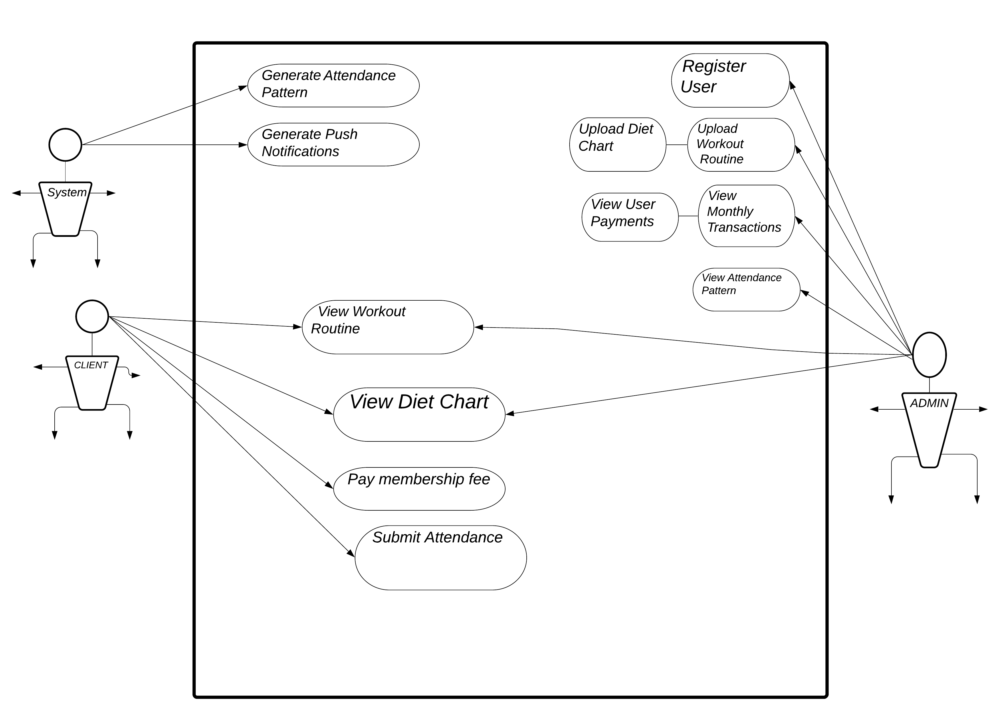
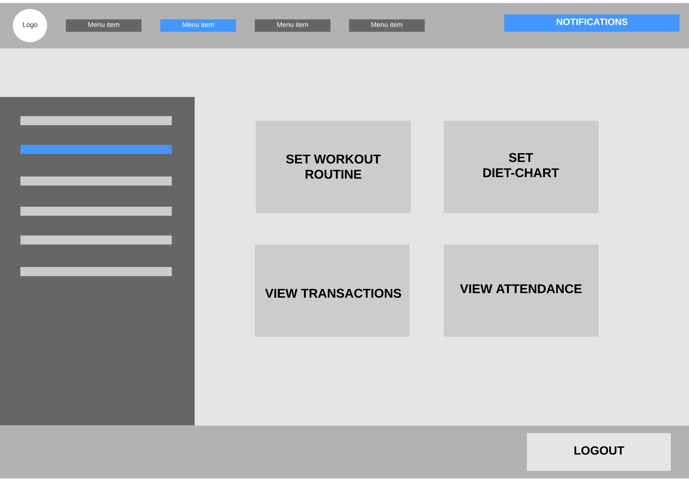

Purpose of Software Requirements Specification (SRS) is to describe the specific descriptions of our project ''Fitness365''. This Software Requirements Specification illustrates in clear terms of system's primary uses and required functionality so that the next developers can easily understand what we did and how to change anything if it is required.
Main Titles: Font: Calibri, Face: Bold, Size: 18
Sub Section Titles: Font: Calibri, Face: Bold, Size: 14
Other Explanations: Font: Calibri, Face: Normal, Size: 12
This Software Requirements Specification (SRS) is designed for Software Designer, Software Developers, Software Tester and for Project Manager. It is required for everyone to read through all the pages of this SRS.
Fitness365 is a platform where a person can easily maintain his fitness by following our suggestions and keep track of his progress by using it's features. When a user log in to this app, the app will show his daily workout routine and diet chart. It will also notified him during his advised time. On the other side the admin can also get many benefits by using this app. Such as, he can see the monetary transactions with the net profit or loss. Admin will be able to see the unpaid and obese members. He can also upload customized workout and diet chart to the clients.
This product is not a follow-on member of any product family but a replacement of the existing gym and fitness management system. Fitness365 will digitalize all the processes that occur between a gym-owner (admin) and its members (user) in a very personalized manner. The admin will be able to send the users customized diet-chart, workout plan, track their payment and attendance pattern. The users will be able to pay their gym membership fee, view the diet/workout plan assigned to them
The product functions are given below:
There will be three types of user classes: Admin, User and System.
Admin will :

The operating environment is given below:
There will be two separate user manuals, one for the admin and the other for the clients which will state all the functionalities of their respective user modes.
The payment feature is dependent on Bkash API as of now. Any changes made to that by Bkash themselves will affect it. Users must have stable internet connection to receive notifications regarding their diet and workout plan.

There are no exclusive hardware requirements. The product will be supported by all kinds of smartphones.
Browsers that support HTML5,CSS3 and JavaScript will ensure the optimal interaction and responsiveness of the website.
The browser and the operating system will handle the communication between different parts of the software.
This section includes the requirements that describe all the essential functions of the system.
ACTOR: User
OVERVIEW: A user should be able to download the mobile application through either an application store or similar service on the mobile phone. The application should be free to download.
COURSE OF EVENTS:
I) Downloads the app from google play store
ACTOR: System
OVERVIEW: Match password entered by the user during login. The inserted password will be matched against the one stored in the database.
COURSE OF EVENTS:
I) Get password from user
II) Get password from databases
III) Match if both the passwords are the same.
ALTERNATIVE COURSE OF EVENTS:
I) The errors will be handled by the view using this function
Actor: User
OVERVIEW: Show the user information to the user. This information will include, name, email, phone number, Height, weight, address and user type. User will be able to modify any of this information except the mail.
COURSE OF EVENTS:
I) Select Profile button from home
II) Select any field
III) Modify the selected field
IV) Click on update information
ALTERNATIVE COURSE OF EVENTS:
I) Data not downloaded properly, show error: Couldn't connect to server, please check your internet connection and try again later!
Actor: User
OVERVIEW: Given to them whom are already registered, the user will be able to login with their email and password.
COURSE OF EVENTS:
I) Select "Sign In" button
II) Enter email and password
III) Click on login
ALTERNATIVE COURSE OF EVENTS:
I) Email not exist, show error: This email is not registered yet. Please Register first.
II) Password does not match, show error: Password or email is not correct. Please retry!
III) Any field left blank, show error: All the fields must be filled up
Apart from the various functional requirements, the product needs to be fast while generating results from the search section.
The system can provide ease both at admin and user level. We as a team focus on program logic to done the require task in systematic, disciplined and in quantifiable approach. This application will run smoothly on Android KitKat (and above) and ios 12+ A RAM of 2gb and above are recommended.
The system will ensure that no data is lost in case the user decides to change his/her devices. It will also ensure not to lose any data even when the user’s device is damaged somehow. Then all data will be stored in system’s cloud storages. The system will help to maintain the privacy of user by best possible encryption method techniques.
The system should secure the privacy of the users. Thus, it shall not disclose any personal information about the users. The system shall not grant any kind of access to an unauthorized user and shall not communicate with any other devices and servers while getting used by the user.
The requirements in this section specifies the reliability, availability and maintainability of the software system.
i. The application shall not crash or close under any circumstances.
ii. The application shall be able to recover in the event of a system failure in at least the time it takes to close the application and restart. It shall recover after a system crash in no longer than 5 minutes.
iii. The application shall always be available to be used by the user.
iv. The application shall be maintained and modified by the developers if the application is found to have a flaw or bug.
v. The application shall be modified with only minor changes to previous code.
Our plan is to include class diagram after the basic protype is finished.